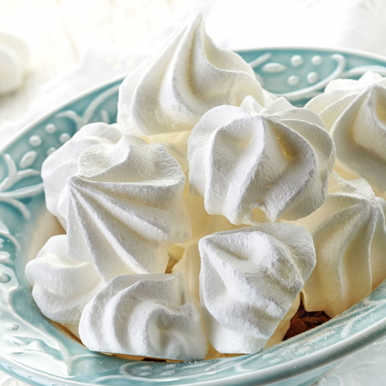

Meringues

Description
J'adore les meringues, et avec cette recette je les réussis à tous les coups !
Une recette simple et gourmande.
Ingredients
- Blanc d'oeufs : 4
- Sucre : 250g
- Sel : une pincée
Steps
- Préchauffez le four à 90°C (thermostat 3). Battez les blancs en neige à l'aide d'un fouet (électrique ou non). N'oubliez pas d'y ajouter une pincée de sel pour qu'ils montent plus vite. Tout en battant, ajoutez la moitié du sucre (125 g). Une fois les blancs montés en neige, ajoutez le reste du sucre avec une cuillère en l'incorporant délicatement (comme quand vous incorporez des blancs en neige pour un gâteau au chocolat).
- Une fois la préparation prête, disposez une feuille de papier cuisson sur la plaque du four (n'utilisez pas de papier alu). Vous pouvez disposer la préparation à l'aide d'une grosse cuillère très facilement afin de faire des meringues moyennes, grosses ou petites. Laisser cuire pendant 1h15 à 90°C. L'intérieur est alors moelleux, alors que l'extérieur est bien croquant.
Back to the Menu